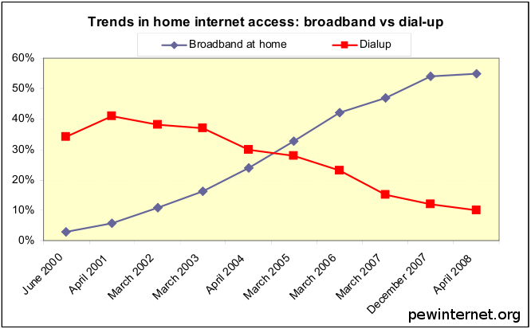
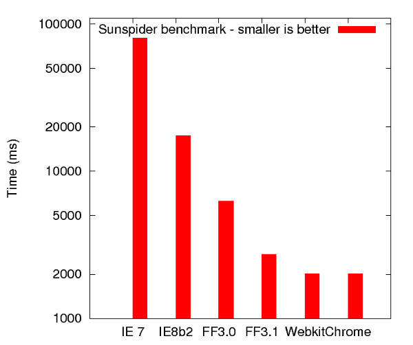
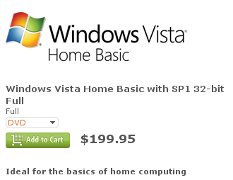
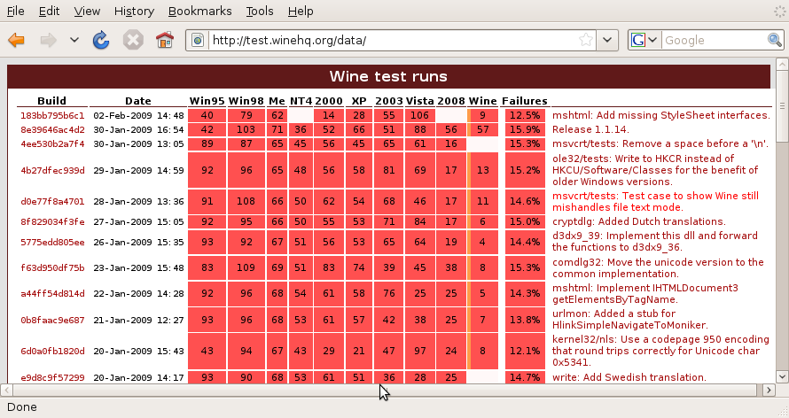
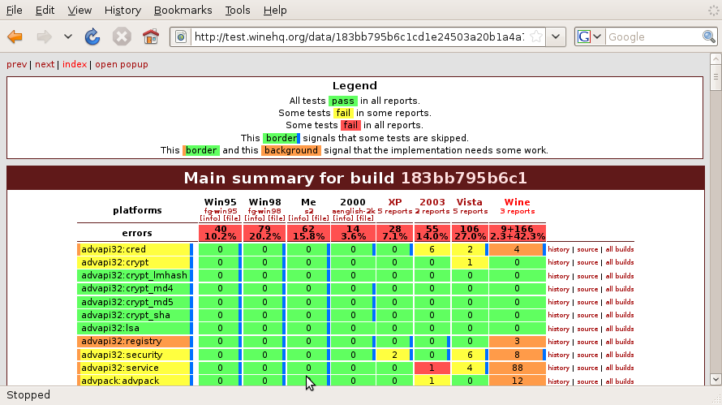

Wine
or
Leaving Windows Behind? Bring your apps with you!
Dan Kegel
Cebit 2009
http://kegel.com/wine/cebit2009
DRAFT
Click on each image to find out more
The opinions expressed in this talk are my own, and not those of my employer
Pay attention, there will be a quiz at the end
The world is changing...

Most people use Windows today...
but recent trends are making it less important
People are switching to the Mac

Mac now has 10% of the market

Coffee-lovers seem to prefer the Mac
People are switching to Open Source


Firefox and Webkit/Safari now have 30% of the browser market (up from 25% last year)

OpenOffice has 2.5 million downloads per day
That's 3% of Microsoft Office's installed base per week


Governments all over are switching to Firefox, OpenOffice, and Linux
Reasons given include:
Encourage competition in the software market
Independence from software suppliers
Lower mid-to-long term cost
Easier to maintain
More secure
Local jobs
People are switching to the Web

Broadband adoption 30% in EU, 50% in US

120 million people use Web email each day


The Web has multiple killer apps

Some current Web browsers run Javascript fast enough now to handle even complex apps

With HTML 5.0, Web apps will work even when offline

Many people now just use the Web, and don't need Windows
People switching to small, cheap computers


Cellphones with awesome web browsers now cost $199

Dell Mini 9n netbook: $250

Windows Vista is too big and expensive for nettops and phones
People are tiring of the cost of Windows

Fine, people are switching away from Windows, and entire nations are considering switching to Linux.
So what? I'm comfortable with Windows.

Windows has SEVEN TIMES as many viruses as Linux? (netlux.org)

We have to cut a million bucks from our IT budget, and
Microsoft support contracts cost HOW MUCH?
"There are more in the 'mad as hell' category than I've ever seen," said [an analyst] regarding customers' feelings about [MS] Software Assurance.
Some organizations are running Linux pilots to improve their bargaining position
Running Windows Apps without Windows

OK, you've convinced me, I guess I should try switching to Linux.
But there's just one more thing:


I have this old app I need to run... can I take it with me?

Sure, you could use VMWare to run those apps in Windows...

... but then you're not saving any money. And it's slower, too.
Why can't Linux just run Windows apps?

Linux cloned Unix
Can't we clone Windows, too?
As it turns out, yes!
Wine
Wine Is Not An Emulator
It's a catalyst

Wine is a free implementation of the Windows APIs
It can run thousands of Windows applications, including
Microsoft Office and Adobe Photoshop... and vital apps
like
World of Warcraft and even
VeggieTales Dance Dance Dance

You can install Wine in Ubuntu Linux with "Add/Remove Applications"

If you need the latest test version, you can download it from WineHQ.org

Hang on, did you say Wine is free?
It's not like elves are doing the work; programmers have to eat, don't they?
If Wine is so good, why give it away for free?

Because doing it as a community project makes it easier for everybody to help
Together, sufficiently motivated users can move mountains

The Wine team is dozens of volunteers
plus a few paid fulltimers
Who uses Wine? Is it for me?
If
all the apps you need are known to work with Wine
or
you're willing to pay for support or help track down problems
then
Wine might be a good fit for you

The Czech law firm Kindl & Partners runs Firefox, OpenOffice and Linux on ten computers
They use Wine to run ASPI,
a standard Czech legal software package

Xavier School in Manilla has 600 computers
Sticking with Windows would have cost them $50,000 + $25,000 annually
So in 2007, they migrated to Linux
"We are quite comfortable with Open Office as a replacement for MS Office.
Email is provided by Lotus Notes or webmail on Firefox.
We are using Wine every day in high school for
WinPlot,
and every week in grade school for custom Chinese programs (written in VB6).
The City of Munich has 14,000 workstations.
All run Firefox; about 10,000 run OpenOffice, and 1400 run Linux.
250 workstations use Wine to run Geoinfo, WS-FTP, and a legal reference book.
Who should not use Wine?
If
you need lots of Windows apps to all work perfectly
and
you're not willing to pay for support or help track down problems
then
you might be better off using real Windows in a virtual machine

To see if an app is known to work with Wine, check the Wine App Database

Codeweavers is the company that pays most of the fulltime Wine developers
They sell supported versions of Wine for both Mac and Linux
They offer custom support, too

Wine development is guided by our conformance test suite

We test each DLL thoroughly every day to maintain quality

We fix bugs almost as fast as people report them

You say Wine runs Windows apps without Windows?
Doesn't that violate Microsoft's copyright or something?

Clean room design techniques are used to ensure Wine is legal
and free of copyright violations

Let's take Wine for a test drive!
Q U I Z
If ohloh.net says Wine cost about 21 million euros to develop so far,
and Wine has 5000 open bugs, costing about 10 million euros to fix,
and the EU has fined Microsoft 1.7 billion euros so far,
1. Can you think of an effective way for the EU to encourage competition in the operating system market?
2. How much would it cost each of CeBIT's half-million visitors together to fix all known Wine bugs?
Financial contributions to the Wine project may be made via the
Software Freedom Conservancy
but we prefer patches :-)

Questions?
Clickable presentation online at kegel.com/wine/cebit2009
Text copyright 2009, Dan Kegel
The opinions expressed in this talk are my own, and not those of my employer